Previous
Previous
Using JConsole
The JConsole graphical user interface is a monitoring tool that complies to the Java Management Extensions (JMX) specification. JConsole uses the extensive instrumentation of the Java Virtual Machine (Java VM) to provide information about the performance and resource consumption of applications running on the Java platform.
In the Java SE 6, JConsole has been updated to present the look and feel of the Windows and GNOME desktops (other platforms will present the standard Java graphical look and feel). The screen captures presented in this document were taken from an instance of the interface running on Windows XP.
Starting JConsole
The jconsole executable can be found in JDK_HOME/bin, where JDK_HOME is the directory in which the Java Development Kit (JDK) is installed. If this directory is in your system path, you can start JConsole by simply typing jconsole in a command (shell) prompt. Otherwise, you have to type the full path to the executable file.
Command Syntax
You can use JConsole to monitor both local applications, namely those running on the same system as JConsole, as well as remote applications, namely those running on other systems.
Note - Using JConsole to monitor a local application is useful for development and for creating prototypes, but is not recommended for production environments, because JConsole itself consumes significant system resources. Remote monitoring is recommended to isolate the JConsole application from the platform being monitored.
For a complete reference on the syntax of the jconsole command, see the manual page for the jconsole command: (Solaris, Linux, or Mac OS X or Windows).
Setting up Local Monitoring
You start JConsole by typing the following command at the command line.
% jconsole
When JConsole starts, you will be given a choice of all the Java applications that are running locally that JConsole can connect to.
If you want to monitor a specific application, and you know that application's process ID, then you can also start JConsole so that it connects to that application. This application must be running with the same user ID as JConsole. The command syntax to start JConsole for local monitoring of a specific application is the following.
% jconsole processID
In the command above processID is the application's process ID (PID). You can determine an application's PID in the following ways:
-
On Solaris, Linux, or Mac OS X systems, you can use the ps command to find the PID of the java instance that is running.
-
On Windows systems, you can use the Task Manager to find the PID of java or javaw.
-
You can also use the jps command-line utility to determine PIDs. See the manual page for the jps tool (Solaris, Linux, or Mac OS X or Windows).
For example, if you determined that the process ID of the Notepad application is 2956, then you would start JConsole with the following command.
% jconsole 2956
Both JConsole and the application must by executed by the same user. The management and monitoring system uses the operating system's file permissions. If you do not specify a process ID, JConsole will automatically detect all local Java applications, and display a dialog box that lets you select which one you want to monitor (see Connecting to a JMX Agent).
For more information, see Local Monitoring and Management.
Setting up Remote Monitoring
To start JConsole for remote monitoring, you use the following command syntax.
% jconsole hostName:portNum
In the command above, hostName is the name of the system running the application and portNum is the port number you specified when you enabled the JMX agent when you started the Java VM. For more information, see Remote Monitoring and Management.
If you do not specify a host name/port number combination, then JConsole will display a connection dialog box (Connecting to a JMX Agent) to enable you to enter a host name and port number.
Setting up Secure Remote Monitoring
You can also start JConsole so that monitoring will be performed over a connection that is secured using Secure Sockets Layer (SSL). The command to start JConsole with a secure connection is given in Remote Monitoring with JConsole with SSL Enabled in Chapter 2, Monitoring and Management Using JMX Technology.
Connecting to a JMX Agent
If you start JConsole with arguments specifying a JMX agent to connect to, it will automatically start monitoring the specified Java VM. You can connect to a different host at any time by choosing Connection | New Connection and entering the necessary information.
Otherwise, if you do not provide any arguments when you start JConsole, the first thing you see is the connection dialog box. This dialog box has two options, allowing connections to either Local or Remote processes.
Dynamic Attach
Under previous releases of the Java SE platform, applications that you wanted to monitor with JConsole needed to be started with the following option.
% -Dcom.sun.management.jmxremote
However, the version of JConsole provided with the Java SE 6 platform can attach to any application that supports the Attach API. In other words, any application that is started in the Java SE 6 HotSpot VM is detected automatically by JConsole, and does not need to be started using the above command-line option.
Connecting JConsole to a Local Process
If you start JConsole without providing a specific JMX agent to connect to, you will see the following dialog window.
Figure 3-1 Creating a Connection to a Local Process

The Local Process option lists any Java VMs running on the local system that were started with the same user ID as JConsole, along with their process ID and their class and/or argument information. To connect JConsole to your application, select the application you want to monitor, then click the Connect button. The list of local processes includes applications running in the following types of Java VM.
-
Applications with the management agent enabled. These include applications on the Java SE 6 platform or on the Java SE 5.0 platform that were started with the -Dcom.sun.management.jmxremote option or with the -Dcom.sun.management.jmxremote.port option specified. In addition, the list also includes any applications that were started on the Java SE 6 platform without any management properties but which are later attached to by JConsole, which enables the management agent at runtime.
-
Applications that are attachable, with the management agent disabled. An attachable application supports loading the management agent at runtime. Attachable applications include applications that are started on the Java SE 6 platform that support the Attach API. Applications which support dynamic attach do not require the management agent to be started by specifying the com.sun.management.jmxremote or com.sun.management.jmxremote.port options at the command line, and JConsole does not need to connect to the management agent before the application is started. If you select this application, you will be informed in a note onscreen that the management agent will be enabled when the connection is made. In the example connection dialog shown in Figure 3-1, the NetBeans IDE and JConsole itself were both started within a Java SE 6 platform VM. Both appear in normal text, meaning that JConsole can connect to them. In Figure 3-1, JConsole is selected, and the note is visible.
-
Applications that are not attachable, with the management agent disabled. These include applications started on a Java SE 1.4.2 platform or started on a Java SE 5.0 platform without the -Dcom.sun.management.jmxremote or com.sun.management.jmxremote.port options. These applications appear grayed-out in the table and JConsole cannot connect to them. In the example connection dialog shown in Figure 3-1, the Anagrams application was started with a Java SE 5.0 platform VM without any of the management properties to enable the JMX agent, and consequently shows up in gray and cannot be selected.
Figure 3-2 Attempting to Connect to an Application without the Management Agent Enabled
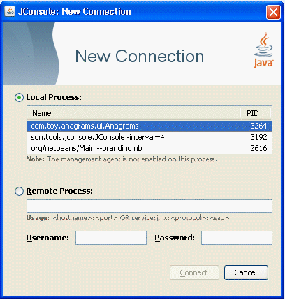In the example connection dialog shown in Figure 3-2, you can see that the Anagrams application has been selected by clicking on it, but the Connect button remains grayed-out and a note has appeared informing you that the management agent is not enabled for this process. JConsole cannot connect to Anagrams because it was not started with the correct Java VM or with the correct options.
Connecting JConsole to a Remote Process
When the connection dialog opens, you are also given the option of connecting to a remote process.
Figure 3-3 Creating a Connection to a Remote Process
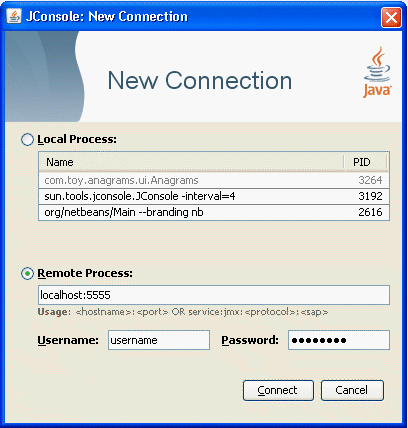To monitor a process running on a remote Java VM, you must provide the following information.
-
Host name: name of the machine on which the Java VM is running.
-
Port number: the JMX agent port number you specified when you started the Java VM.
-
User name and password: the user name and password to use (required only if monitoring a Java VM through a JMX agent that requires password authentication).
For information about setting the port number of the JMX agent, see Enabling the Out-of-the-Box Management. For information about user names and passwords, see Using Password and Access Files.
To monitor the Java VM that is running JConsole, simply click Connect, using host localhost and the port 0.
Connecting Using a JMX Service URL
You can also use the Remote Process option to connect to other JMX agents by specifying their JMX service URL, and the user name and password. The syntax of a JMX service URL requires that you provide the transport protocol used to make the connection, as well as a service access point. The full syntax for a JMX service URL is described in the API documentation for javax.management.remote.JMXServiceURL.
Figure 3-4 Connecting to a JMX Agent Using the JMX Service URL
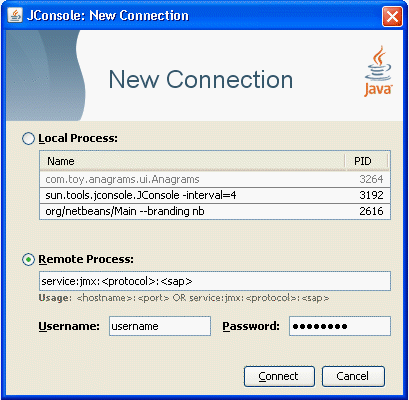If the JMX agent uses a connector which is not included in the Java platform, you need to add the connector classes to the class path when you run the jconsole command, as follows.
% jconsole -J-Djava.class.path=JAVA_HOME/lib/jconsole.jar:JAVA_HOME/lib/tools.jar:connector-path
In the command above, connector-path is the directory or the Java archive (Jar) file containing the connector classes that are not included in the JDK, that are to be used by JConsole.
Presenting the JConsole Tabs
Once you have connected JConsole to an application, JConsole is composed of six tabs.
-
Overview: Displays overview information about the Java VM and monitored values.
-
Memory: Displays information about memory use.
-
Threads: Displays information about thread use.
-
Classes: Displays information about class loading.
-
VM: Displays information about the Java VM.
-
MBeans: Displays information about MBeans.
You can use the green connection status icon in the upper right-hand corner of JConsole at any time, to disconnect from or reconnect to a running Java VM. You can connect to any number of running Java VMs at a time by selecting Connection then New Connection from the drop-down menu.
Viewing Overview Information
The Overview tab displays graphical monitoring information about CPU usage, memory usage, thread counts, and the classes loaded in the Java VM, all in a single screen.
Figure 3-5 Overview Tab
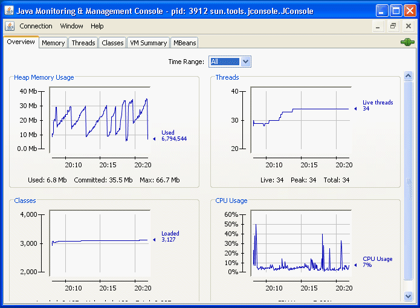The Overview tab provides an easy way to correlate information that was previously only available by switching between multiple tabs.
Saving Chart Data
JConsole allows you to save the data presented in the charts in a Comma Separated Values (CSV) file. To save data from a chart, simply right-click on any chart, select Save data as..., and then specify the file in which the data will be saved. You can save the data from any of the charts displayed in any of JConsole's different tabs in this way.
The CSV format is commonly used for data exchange between spreadsheet applications. The CSV file can be imported into spreadsheet applications and can be used to create diagrams in these applications. The data is presented as two or more named columns, where the first column represents the time stamps. After importing the file into a spreadsheet application, you will usually need to select the first column and change its format to be "date" or "date/time" as appropriate.
Monitoring Memory Consumption
The Memory tab provides information about memory consumption and memory pools.
Figure 3-6 Memory Tab

The Memory tab features a “Perform GC” button that you can click to perform garbage collection whenever you want. The chart shows the memory use of the Java VM over time, for heap and non-heap memory, as well as for specific memory pools. The memory pools available depend on which version of the Java VM is being used. For the HotSpot Java VM, the memory pools for serial garbage collection are the following.
-
Eden Space (heap): The pool from which memory is initially allocated for most objects.
-
Survivor Space (heap): The pool containing objects that have survived the garbage collection of the Eden space.
-
Tenured Generation (heap): The pool containing objects that have existed for some time in the survivor space.
-
Permanent Generation (non-heap): The pool containing all the reflective data of the virtual machine itself, such as class and method objects. With Java VMs that use class data sharing, this generation is divided into read-only and read-write areas.
-
Code Cache (non-heap): The HotSpot Java VM also includes a code cache, containing memory that is used for compilation and storage of native code.
You can display different charts for charting the consumption of these memory pools by choosing from the options in the Chart drop-down menu. Also, clicking on either of the Heap or Non-Heap bar charts in the bottom right-hand corner will switch the chart displayed. Finally, you can specify the time range over which you track memory usage by selecting from the options in the Time Range drop-down menu.
For more information about these memory pools, see Garbage Collection below.
The Details area shows several current memory metrics:
-
Used: the amount of memory currently used, including the memory occupied by all objects, both reachable and unreachable.
-
Committed: the amount of memory guaranteed to be available for use by the Java VM. The amount of committed memory may change over time. The Java virtual machine may release memory to the system and the amount of committed memory could be less than the amount of memory initially allocated at start up. The amount of committed memory will always be greater than or equal to the amount of used memory.
-
Max: the maximum amount of memory that can be used for memory management. Its value may change or be undefined. A memory allocation may fail if the Java VM attempts to increase the used memory to be greater than committed memory, even if the amount used is less than or equal to max (for example, when the system is low on virtual memory).
-
GC time: the cumulative time spent on garbage collection and the total number of invocations. It may have multiple rows, each of which represents one garbage collector algorithm used in the Java VM.
The bar chart on the lower right-hand side shows the memory consumed by the memory pools in heap and non-heap memory. The bar will turn red when the memory used exceeds the memory usage threshold. You can set the memory usage threshold through an attribute of the MemoryMXBean.
Heap and Non-Heap Memory
The Java VM manages two kinds of memory: heap and non-heap memory, both of which are created when the Java VM starts.
-
Heap memory is the runtime data area from which the Java VM allocates memory for all class instances and arrays. The heap may be of a fixed or variable size. The garbage collector is an automatic memory management system that reclaims heap memory for objects.
-
Non-heap memory includes a method area shared among all threads and memory required for the internal processing or optimization for the Java VM. It stores per-class structures such as a runtime constant pool, field and method data, and the code for methods and constructors. The method area is logically part of the heap but, depending on the implementation, a Java VM may not garbage collect or compact it. Like the heap memory, the method area may be of a fixed or variable size. The memory for the method area does not need to be contiguous.
In addition to the method area, a Java VM may require memory for internal processing or optimization which also belongs to non-heap memory. For example, the Just-In-Time (JIT) compiler requires memory for storing the native machine code translated from the Java VM code for high performance.
Memory Pools and Memory Managers
Memory pools and memory managers are key aspects of the Java VM's memory system.
-
A memory pool represents a memory area that the Java VM manages. The Java VM has at least one memory pool and it may create or remove memory pools during execution. A memory pool can belong either to heap or to non-heap memory.
-
A memory manager manages one or more memory pools. The garbage collector is a type of memory manager responsible for reclaiming memory used by unreachable objects. A Java VM may have one or more memory managers. It may add or remove memory managers during execution. A memory pool can be managed by more than one memory manager.
Garbage Collection
Garbage collection (GC) is how the Java VM frees memory occupied by objects that are no longer referenced. It is common to think of objects that have active references as being "alive" and non-referenced (or unreachable) objects as "dead." Garbage collection is the process of releasing memory used by the dead objects. The algorithms and parameters used by GC can have dramatic effects on performance.
The Java HotSpot VM garbage collector uses generational GC. Generational GC takes advantage of the observation that most programs conform to the following generalizations.
-
They create many objects that have short lives, for example, iterators and local variables.
-
They create some objects that have very long lives, for example, high level persistent objects.
Generational GC divides memory into several generations, and assigns one or more memory pools to each. When a generation uses up its allotted memory, the VM performs a partial GC (also called a minor collection) on that memory pool to reclaim memory used by dead objects. This partial GC is usually much faster than a full GC.
The Java HotSpot VM defines two generations: the young generation (sometimes called the "nursery") and the old generation. The young generation consists of an "Eden space" and two "survivor spaces." The VM initially assigns all objects to the Eden space, and most objects die there. When it performs a minor GC, the VM moves any remaining objects from the Eden space to one of the survivor spaces. The VM moves objects that live long enough in the survivor spaces to the "tenured" space in the old generation. When the tenured generation fills up, there is a full GC that is often much slower because it involves all live objects. The permanent generation holds all the reflective data of the virtual machine itself, such as class and method objects.
The default arrangement of generations looks something like Figure 3-7.
Figure 3-7 Generations of Data in Garbage Collection

If the garbage collector has become a bottleneck, you can improve performance by customizing the generation sizes. Using JConsole, you can investigate the sensitivity of your performance metric by experimenting with the garbage collector parameters. For more information, see Tuning Garbage Collection with the 5.0 HotSpot VM.
Monitoring Thread Use
The Threads tab provides information about thread use.
Figure 3-8 Threads Tab
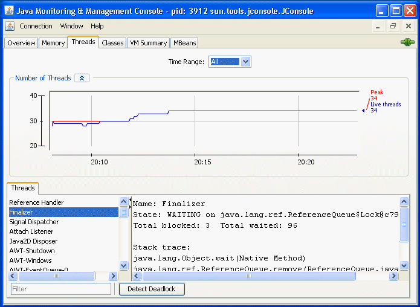The Threads list in the lower left corner lists all the active threads. If you enter a string in the Filter field, the Threads list will show only those threads whose name contains the string you enter. Click on the name of a thread in the Threads list to display information about that thread to the right, including the thread name, state, and stack trace.
The chart shows the number of live threads over time. Two lines are shown.
-
Red: peak number of threads
-
Blue: number of live threads.
The Threading MXBean provides several other useful operations that are not covered by the Threads tab.
-
findMonitorDeadlockedThreads: Detects if any threads are deadlocked on the object monitor locks. This operation returns an array of deadlocked thread IDs.
-
getThreadInfo: Returns the thread information. This includes the name, stack trace, and the monitor lock that the thread is currently blocked on, if any, and which thread is holding that lock, as well as thread contention statistics.
-
getThreadCpuTime: Returns the CPU time consumed by a given thread
You can access these additional features via the MBeans tab by selecting the Threading MXBean in the MBeans tree. This MXBean lists all the attributes and operations for accessing threading information in the Java VM being monitored. See Monitoring and Managing MBeans.
Detecting Deadlocked Threads
To check if your application has run into a deadlock (for example, your application seems to be hanging), deadlocked threads can be detected by clicking on the "Detect Deadlock" button. If any deadlocked threads are detected, these are displayed in a new tab that appears next to the "Threads" tab, as shown in Figure 3-9.
Figure 3-9 Deadlocked Threads
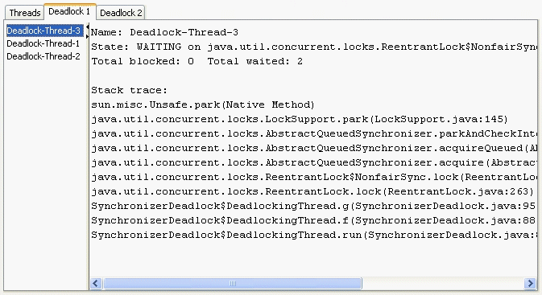The Detect Deadlock button will detect deadlock cycles involving object monitors and java.util.concurrent ownable synchronizers (see the API specification documentation for java.lang.management.LockInfo). Monitoring support for java.util.concurrent locks has been added in Java SE 6. If JConsole connects to a Java SE 5.0 VM, the Detect Deadlock mechanism will only find deadlocks related to object monitors. JConsole will not show any deadlocks related to ownable synchronizers.
See the API documentation for java.lang.Thread for more information about threads and daemon threads.
Monitoring Class Loading
The Classes tab displays information about class loading.
Figure 3-10 Classes Tab
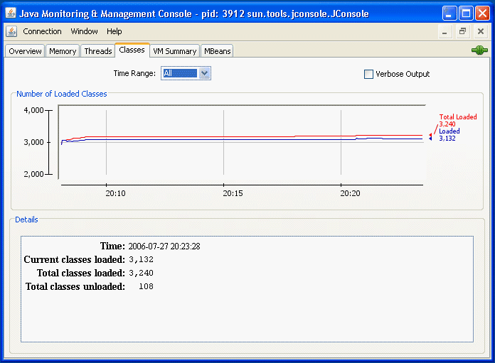The chart plots the number of classes loaded over time.
-
The red line is the total number of classes loaded (including those subsequently unloaded).
-
The blue line is the current number of classes loaded.
The Details section at the bottom of the tab displays the total number of classes loaded since the Java VM started, the number currently loaded and the number unloaded. You can set the tracing of class loading to verbose output by checking the checkbox in the top right-hand corner.
Viewing VM Information
The VM Summary tab provides information about the Java VM.
Figure 3-11 VM Summary Tab
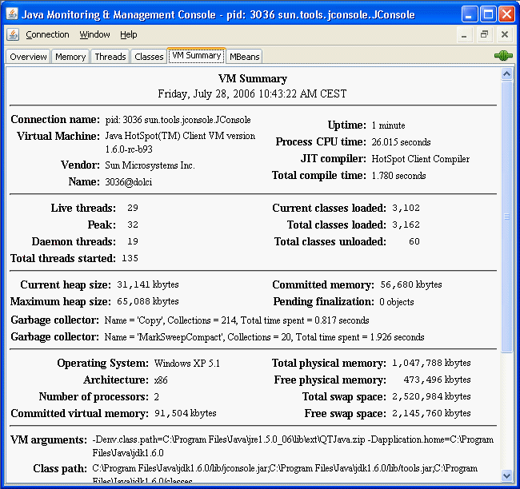The information presented in this tab includes the following.
-
Summary
-
Uptime: Total amount of time since the Java VM was started.
-
Process CPU Time: Total amount of CPU time that the Java VM has consumed since it was started.
-
Total Compile Time: Total accumulated time spent in JIT compilation. The Java VM determines when JIT compilation occurs. The Hotspot VM uses adaptive compilation, in which the VM launches an application using a standard interpreter, but then analyzes the code as it runs to detect performance bottlenecks, or "hot spots".
-
-
Threads
-
Live threads: Current number of live daemon threads plus non-daemon threads.
-
Peak: Highest number of live threads since Java VM started.
-
Daemon threads: Current number of live daemon threads.
-
Total threads started: Total number of threads started since Java VM started, including daemon, non-daemon, and terminated threads.
-
-
Classes
-
Current classes loaded: Number of classes currently loaded into memory.
-
Total classes loaded: Total number of classes loaded into memory since the Java VM started, including those that have subsequently been unloaded.
-
Total classes unloaded: Number of classes unloaded from memory since the Java VM started.
-
-
Memory
-
Current heap size: Number of kilobytes currently occupied by the heap.
-
Committed memory: Total amount of memory allocated for use by the heap.
-
Maximum heap size: Maximum number of kilobytes occupied by the heap.
-
Objects pending for finalization: Number of objects pending for finalization.
-
Garbage collector: Information about garbage collection, including the garbage collector names, number of collections performed, and total time spent performing GC.
-
-
Operating System
-
Total physical memory: Amount of random-access memory (RAM) the operating system has.
-
Free physical memory: Amount of free RAM available to the operating system.
-
Committed virtual memory: Amount of virtual memory guaranteed to be available to the running process.
-
-
Other Information
-
VM arguments: The input arguments the application passed to the Java VM, not including the arguments to the main method.
-
Class path: The class path that is used by the system class loader to search for class files.
-
Library path: The list of paths to search when loading libraries.
-
Boot class path: The boot class path is used by the bootstrap class loader to search for class files.
-
Monitoring and Managing MBeans
The MBeans tab displays information about all the MBeans registered with the platform MBean server in a generic way. The MBeans tab allows you to access the full set of the platform MXBean instrumentation, including that which is not visible in the other tabs. In addition, you can monitor and manage your application's MBeans using the MBeans tab.
Figure 3-12 MBeans Tab
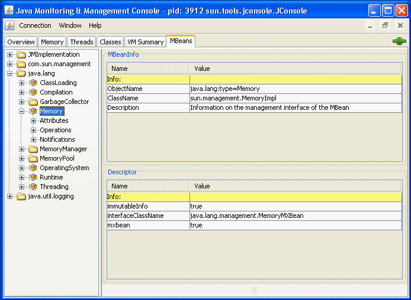The tree on the left shows all the MBeans currently running. When you select an MBean in the tree, its MBeanInfo and its MBean Descriptor are both displayed on the right, and any attributes, operations or notifications appear in the tree below it.
All the platform MXBeans and their various operations and attributes are accessible via JConsole's MBeans tab.
Constructing the MBean Tree
By default, the MBeans are displayed in the tree based on their object names. The order of key properties specified when the object names are created is preserved by JConsole when it adds MBeans to the MBean tree. The exact key property list that JConsole will use to build the MBean tree will be the one returned by the method ObjectName.getKeyPropertyListString(), with type as the first key, and j2eeType, if present, as the second key.
However, relying on the default order of the ObjectName key properties can sometimes lead to unexpected behavior when JConsole renders the MBean tree. For example, if two object names have similar keys but their key order differs, then the corresponding MBeans will not be created under the same node in the MBean tree.
For example, suppose you create Triangle MBean objects with the following names.
com.sun.example:type=Triangle,side=isosceles,name=1 com.sun.example:type=Triangle,name=2,side=isosceles com.sun.example:type=Triangle,side=isosceles,name=3
As far as the JMX technology is concerned, these objects will be treated in exactly the same way. The order of the keys in the object name makes no difference to the JMX technology. However, if JConsole connects to these MBeans and the default MBean tree rendering is used, then the object com.sun.example:type=Triangle,name=2,side=isosceles will end up being created under the Triangle node, in a node called 2, which in turn will contain a sub-node called isosceles. The other two isosceles triangles, name=1 and name=3, will be grouped together under Triangle in a different node called isosceles, as shown in Figure 3-13.
Figure 3-13 Example of Unexpected MBean Tree Rendering
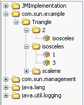To avoid this problem, you can specify the order in which the MBeans are displayed in the tree by supplying an ordered key property list when you start JConsole at the command line. This is achieved by setting the system property com.sun.tools.jconsole.mbeans.keyPropertyList, as shown in the following command.
% jconsole -J-Dcom.sun.tools.jconsole.mbeans.keyPropertyList=key[,key]*
The key property list system property takes a comma-separated list of keys, in the order of your choosing, where key must be a string representing an object name key or an empty string. If a key specified in the list does not apply to a particular MBean, then that key will be discarded. If an MBean has more keys than the ones specified in the key property list, then the key order defined by the value returned by ObjectName.getKeyPropertyListString() will be used to complete the key order defined by keyPropertyList. Therefore, specifying an empty list of keys simply means that JConsole will display keys in the order they appear in the MBean's ObjectName.
So, returning to the example of the Triangle MBeans cited above, you could choose to start JConsole specifying the keyPropertyList system property, so that all your MBeans will be grouped according to their side key property first, and their name key property second. To do this, you would start JConsole with the following command.
% jconsole -J-Dcom.sun.tools.jconsole.mbeans.keyPropertyList=side,name
Starting JConsole with this system property specified would produce the MBean tree shown in Figure 3-14.
Figure 3-14 Example of MBean Tree Constructed Using keyPropertyList
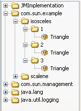In Figure 3-14, the side key comes first, followed by the name key. The type key comes at the end because it was not specified in the key property list, so the MBean tree algorithm applied the original key order for the remaining keys. Consequently, the type key is appended at the end, after the keys which were defined by the keyPropertyList system property.
According to the object name convention defined by the JMX Best Practices Guidelines, the type key should always come first. So, to respect this convention you should start JConsole with the following system property.
% jconsole -J-Dcom.sun.tools.jconsole.mbeans.keyPropertyList=type,side,name
The above command will cause JConsole to render the MBean tree for the Triangle MBeans as shown in Figure 3-15.
Figure 3-15 Example of MBean Tree Constructed Respecting JMX Best Practices

This is obviously much more comprehensible than the MBean trees shown in Figure 3-13 and Figure 3-14.
MBean Attributes
Selecting the Attributes node displays all the attributes of an MBean. Figure 3-16 shows all the attributes of the Threading platform MXBean.
Figure 3-16 Viewing All MBean Attributes
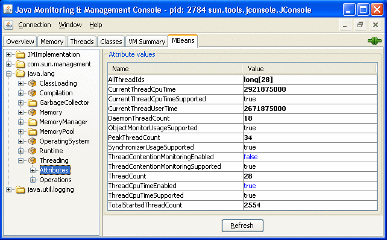Selecting an individual MBean attribute from the tree then displays the attribute's value, its MBeanAttributeInfo, and the associated Descriptor in the right pane, as you can see in Figure 3-17.
Figure 3-17 Viewing an Individual MBean Attribute
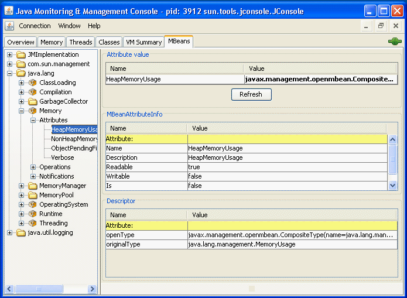You can display additional information about an attribute by double-clicking on the attribute value, if it appears in bold text. For example, if you click on the value of the HeapMemoryUsage attribute of the java.lang.Memory MBean, you will see a chart that looks something like Figure 3-18.
Figure 3-18 Displaying Attribute Values
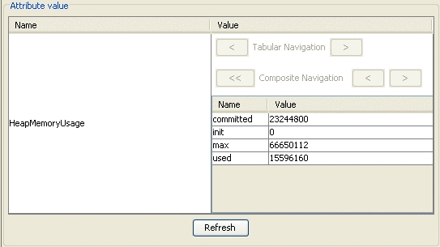Double-clicking on numeric attribute values will display a chart that plots changes in that numeric value. For example, double-clicking on the CollectionTime attribute of the Garbage Collector MBean PS Marksweep will plot the time spent performing garbage collection.
You can also use JConsole to set the values of writable attributes. The value of a writable attribute is displayed in blue. Here you can see the Memory MBean's Verbose attribute.
Figure 3-19 Setting Writable Attribute Values
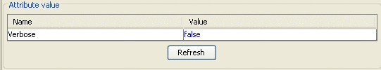You can set attributes by clicking on them and then editing them. For example, to enable or disable the verbose tracing of the garbage collector in JConsole, select the Memory MXBean in the MBeans tab and set the Verbose attribute to true or false. Similarly, the class loading MXBean also has the Verbose attribute, which can be set to enable or disable class loading verbose tracing.
MBean Operations
Selecting the Operations node displays all the operations of an MBean. The MBean operations appear as buttons, that you can click to invoke the operation.Figure 3-20 shows all the operations of the Threading platform MXBean.
Figure 3-20 Viewing All MBean Operations
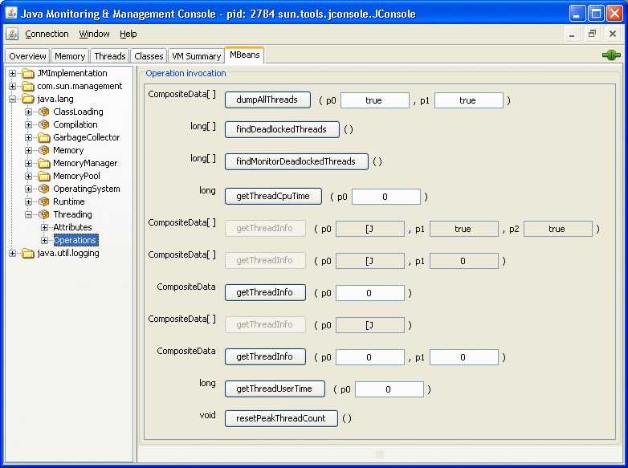Selecting an individual MBean operation in the tree displays the button for invoking the MBean operation, and the operation's MBeanOperationInfo and its Descriptor, as shown in Figure 3-21.
Figure 3-21 Viewing Individual MBean Operations
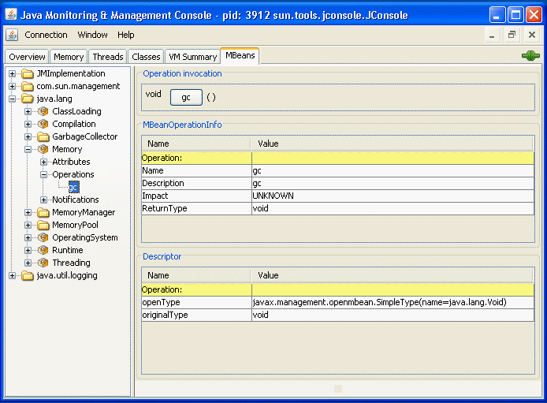MBean Notifications
You can subscribe to receive notifications by selecting the Notifications node in the left-hand tree, and clicking the Subscribe button that appears on the right. The number of notifications received is displayed in square brackets, and the Notifications node itself will appear in bold text when new notifications are received. The notifications of the Memory platform MXBean are shown in Figure 3-22.
Figure 3-22 Viewing MBean Notifications
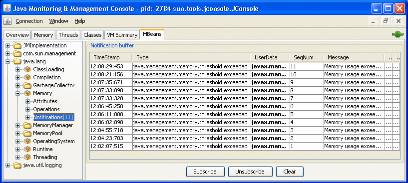Selecting an individual MBean notification displays the MBeanNotificationInfo in the right pane, as shown in Figure 3-23.
Figure 3-23 Viewing Individual MBean Notifications
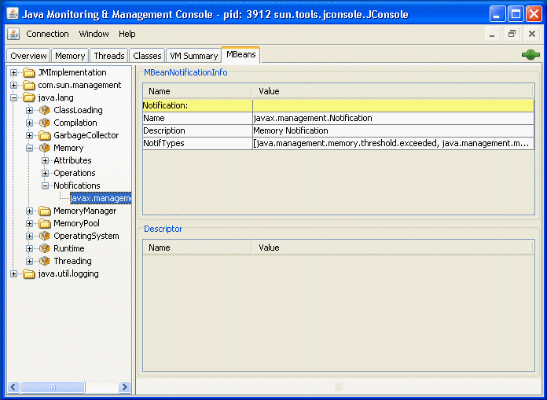HotSpot Diagnostic MXBean
JConsole's MBeans tab also allows you to tell the HotSpot VM to perform a heap dump, and to get or set a VM option via the HotSpotDiagnostic MXBean.
Figure 3-24 Viewing the HotSpot Diagnostic MBean
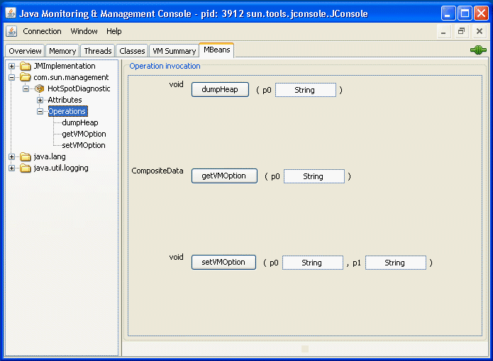You can perform a heap dump manually by invoking the com.sun.management.HotSpotDiagnostic MXBean's dumpHeap operation. In addition, you can specify the HeapDumpOnOutOfMemoryError Java VM option using the setVMOption operation, so that the VM performs a heap dump automatically whenever it receives an OutOfMemoryError.
Creating Custom Tabs
In addition to the existing standard tabs, you can add your own custom tabs to JConsole, to perform your own monitoring activities. The JConsole plug-in API provides a mechanism by which you can, for example, add a tab to access your own application's MBeans. The JConsole plug-in API defines the com.sun.tools.jconsole.JConsolePlugin abstract class that you can extend to build your custom plug-in.
As stated above, your plug-in must extend JConsolePlugin, and implement the JConsolePlugin getTabs and newSwingWorker methods. The getTabs method returns either the list of tabs to be added to JConsole, or an empty list. The newSwingWorker method returns the SwingWorker to be responsible for the plug-in's GUI update.
Your plug-in must be provided in a Java archive (JAR) file that contains a file named META-INF/services/com.sun.tools.jconsole.JConsolePlugin. This JConsolePlugin file itself contains a list of all the fully-qualified class names of the plug-ins you want to add as new JConsole tabs. JConsole uses the service-provider loading facility to look up and load the plug-ins. You can have multiple plug-ins, with one entry per plug-in in the JConsolePlugin.
To load the new custom plug-ins into JConsole, start JConsole with the following command:
% jconsole -pluginpath plugin-path
In the above command, plugin-path specifies the paths to the JConsole plug-ins to be looked up. These paths can either be to directory names or to JAR files, and multiple paths can be specified, using your platform's standard separator character.
An example JConsole plug-in is provided with the Java SE 6 platform. The JTop application is a JDK demonstration that shows the CPU usage of all threads running in the application. This demo is useful for identifying threads that have high CPU consumption, and it has been updated to be used as a JConsole plug-in as well as a standalone GUI. JTop is bundled with the Java SE 6 platform, as a demo application. You can run JConsole with the JTop plug-in by running the following command:
% JDK_HOME/bin/jconsole -pluginpath JDK_HOME/demo/management/JTop/JTop.jar
If you connect to this instance of JConsole, you will see that the JTop tab has been added, showing CPU usage of the various threads running.
Figure 3-25 Viewing a Custom Plug-in Tab
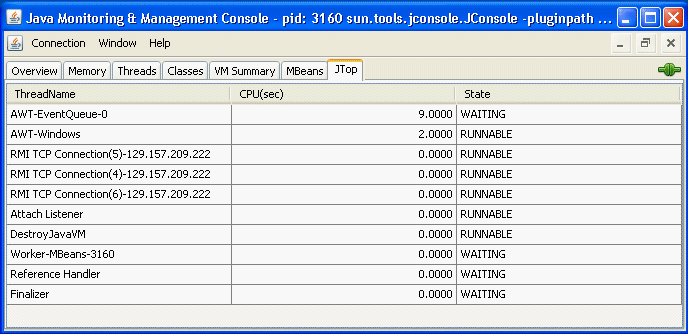